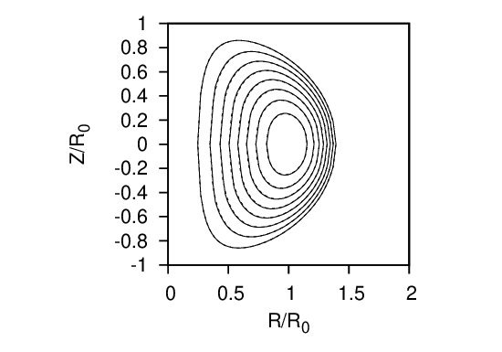

To benchmark the numerical code, I set the profile of P and g according to Eqs. (508) and (509) with the parameters c2 = 0, c1 = B0(κ02 + 1)∕(R02κ0q0), κ0 = 1.5, and q0 = 1.5. The comparison of the analytic and numerical results are shown in Fig. 31.

Note that the parameter c0 in the Solovev equilibrium seems to be not needed in the numerical calculation. In fact this impression is wrong: the c0 parameter is actually needed in determining the boundary magnetic surface of the numerical equilibrium (in the case considered here c0 is chosen as c0 = B0∕(R02κ0q0)).